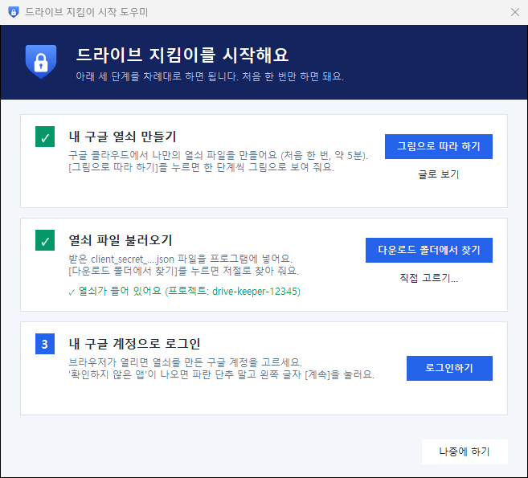
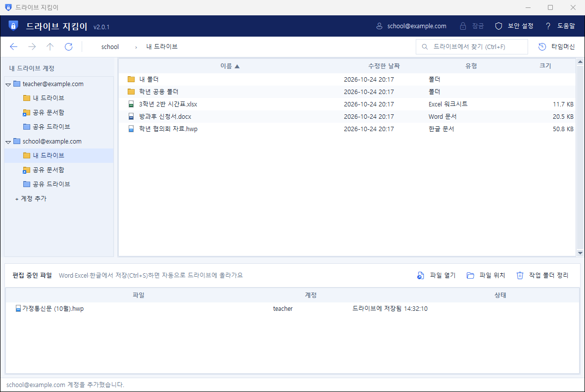

그대로 따라 하면
끝나요 😊
한 화면에 하나씩 보여 드려요. 그림 속 주황색 동그라미를 누르면 돼요. 처음부터 끝까지 약 7분이면 구글 드라이브가 연결돼요.

설치하기
약 1분 · 관리자 권한이 필요 없어요
프로그램 내려받기
- 아래 파란 내려받기 단추를 눌러요.
- 다 받아지면 오른쪽 위에 뜨는 창에서 📁 폴더 모양을 눌러요.창이 안 보이면 키보드 Ctrl + J
비밀번호 잠금을
20.0MB · 완료📁
압축 풀기
- DriveKeeper 파일 위에서 마우스 오른쪽 단추를 눌러요.
- 모두 압축 풀기...를 눌러요.
- 새 창에서 압축 풀기를 눌러요.
메뉴에 ‘모두 압축 풀기’가 없어요
- 파일을 한 번 눌러 고른 뒤, 창 위쪽의 모두 압축 풀기를 눌러요.
- 반디집·알집이 깔려 있으면 여기에 풀기를 눌러도 돼요.
‘설치하기’ 두 번 누르기
- 새로 열린 창에서 📁 드라이브 지킴이 폴더를 두 번 눌러 들어가요.
- 설치하기를 두 번 눌러요.까만 창이 잠깐 보여도 괜찮아요.
- 아래 같은 경고 창이 뜨면 추가 정보 → 실행.또는 ‘보안 경고’ 창이면 실행. 아무 창도 안 뜨면 넘어가요.
추가 정보
설치 끝! 프로그램 켜기
- ‘설치가 끝났어요!’ 창에서 예를 눌러요.
- 드라이브 지킴이와 시작 도우미 창이 떠요. 그대로 두고 다음 단계로 가요.
바탕화면의 '드라이브 지킴이'를 두 번 누르면 시작해요.
지금 바로 켤까요?
내 구글 열쇠 만들기
처음 한 번 · 약 5분 · 무료 · 모두 내 드라이브 구글 계정으로 해요
구글 클라우드에서
‘프로젝트’ 만들기
드라이브 지킴이는 내 드라이브를 나만의 열쇠로만 열어요. 열쇠는 구글에서 무료로 만들어요. 단추를 누르면 구글 화면이 새 탭으로 열려요.
- 아래 구글 클라우드 열기를 눌러요. 로그인 화면이 나오면 내 드라이브 계정으로 로그인해요.
- 처음이면 약관 창이 떠요: 국가 대한민국 → 체크 ☑ → 동의 및 계속
- 프로젝트 이름 칸에 drive-keeper 라고 써요.
- 파란 만들기를 누르고 10초쯤 기다려요.
잘 안 되나요?
- 학교·회사 계정이라 만들 수 없다고 나오면 → 개인 Gmail로 만들어도 돼요. 학교 계정은 나중에 ⑤장처럼 추가해요.
- ‘프로젝트를 더 만들 수 없어요’ → 예전에 만든 프로젝트를 골라서 다음 단계로 가도 돼요.
구글 드라이브 기능 켜기
- 아래 드라이브 기능 화면 열기를 눌러요.
- 맨 위 네모 칸에 drive-keeper가 보이는지 확인해요.다른 이름이면 그 칸을 눌러 drive-keeper를 골라요.
- 파란 사용을 눌러요. 화면이 바뀌면 성공!
잘 안 되나요?
- 사용 대신 관리만 보이면 → 이미 켜져 있어요. 다음으로 가요.
앱 이름 정하기
카드 4장을 차례로
- 아래 단추로 화면을 열고 시작하기. 앱 이름에 드라이브 지킴이, 이메일은 내 이메일을 골라요 → 다음
- 대상: 외부를 골라요 → 다음
- 연락처: 내 이메일을 써요 → 다음
- 동의 칸에 체크 ☑ → 계속 → 만들기
잘 안 되나요?
- 시작하기가 없고 다른 화면이 나오면 → 이미 해 둔 거예요. 다음으로 가요.
- 맨 위 프로젝트 이름이 drive-keeper인지 확인해요.
다음
나를 ‘테스트 사용자’로 넣기
- 아래 단추로 화면을 열고 조금 내려 테스트 사용자를 찾아요.
- + Add users (또는 + 사용자 추가)를 눌러요.
- 내 Gmail 주소를 쓰고 저장을 눌러요.
school@example.com ← 학교 계정(있으면)
열쇠 만들기
- 아래 단추로 화면을 열어요.
- 애플리케이션 유형 칸을 눌러 데스크톱 앱을 골라요.꼭 ‘데스크톱 앱’이어야 해요!
- 이름은 그대로 두고 파란 만들기를 눌러요.
열쇠 파일 받기 ⭐
- ‘OAuth 클라이언트 생성됨’ 창에서 JSON 다운로드를 눌러요.
- 파일이 받아지면 확인을 눌러 창을 닫아요.
프로그램과 구글 드라이브 연결하기
약 1분 · 처음 한 번만
열쇠 넣기
- 드라이브 지킴이로 돌아가요. 시작 도우미 창이 보여요.안 보이면 맨 위 도움말 → 시작 도우미
- 2번 칸의 다운로드 폴더에서 찾기를 눌러요.
- ‘✓ 열쇠가 들어 있어요’가 나오면 성공!
잘 안 되나요?
- ‘열쇠 파일을 찾지 못했어요’ → 열쇠 파일 받기 단계에서 JSON 다운로드를 눌렀는지 확인해요.
- ‘웹 애플리케이션 열쇠예요’ → 열쇠 만들기에서 데스크톱 앱으로 다시 만들어요.
- 다른 곳에 저장했다면 직접 고르기...로 그 파일을 골라요.

로그인하기
- 3번 칸의 로그인하기를 눌러요.
- 브라우저가 열리면 열쇠를 만든 내 계정을 눌러요.

teacher@example.com
‘확인하지 않은 앱’이 나오면
왼쪽 [계속]
- 파란 단추 말고, 왼쪽 아래 글자 계속을 눌러요.
화면이 조금 달라요
- 계속이 없고 고급이 있으면 → 고급 → ‘…(으)로 이동(안전하지 않음)’을 눌러요.
- 빨간 ‘액세스 차단됨’이 나오면 → 열쇠 만들기의 테스트 사용자에 이 이메일을 넣지 않았어요. 넣고 다시 해요.
허락하기
- 체크 칸이 있으면 체크 ☑ 해요.
- 파란 계속을 눌러요.
- ‘로그인이 완료되었습니다’가 나오면 브라우저 탭을 닫고 드라이브 지킴이로 돌아가요.
연결 끝! 정말 잘했어요
왼쪽에 내 계정, 가운데에 내 드라이브 파일이 보이면 성공이에요. 이제 구글 드라이브를 안전하게 쓸 수 있어요.
써 보기
파일 고치기 · 비밀번호 잠금 · 지운 파일 되살리기
파일 열고 저장하기
- 파일을 두 번 눌러요. 한글·Word·Excel이 열려요.
- 고치고 Ctrl + S 로 저장해요.
- 아래 ‘편집 중인 파일’에 드라이브에 저장됨이 나오면 끝!다른 컴퓨터에서도 바뀐 내용이 보여요.
비밀번호 걸기 🔒
- 맨 위 보안 설정을 눌러요.
- 비밀번호를 두 번 써요. (4자 이상)
- 잠글 때를 골라요: 켤 때 · 몇 분 안 쓸 때 · 절전에서 깰 때
- 저장. 이제 잠금이나 Ctrl + L 로 바로 잠가요.

지운 파일 되살리기 ⏪
- 오른쪽 위 타임머신을 눌러요.
- 되살릴 파일을 골라요. 안 보이면 이름 일부를 쓰고 찾기.
- 선택한 항목 되살리기를 누르면 원래 폴더로 돌아와요!

계정 하나 더 넣기
예시: 내 계정(teacher@example.com)에 학교 계정(school@example.com)을 더해요
학교 계정을
테스트 사용자로 넣기
예시 · 내 계정 teacher@example.com에 학교 계정 school@example.com을 더해 볼게요.
- 아래 단추로 화면을 열어요. 맨 위가 열쇠를 만든 내 계정인지 확인해요.
- + Add users → school@example.com → 저장
[+ 계정 추가] 누르기
- 드라이브 지킴이 왼쪽 목록 맨 아래 + 계정 추가를 눌러요.
- 브라우저가 열리면 다른 계정 사용을 눌러요.목록에 학교 계정이 있으면 그걸 바로 눌러요.
- 학교 계정 주소와 비밀번호로 로그인해요.
teacher@example.com
[계속] → 체크 → [계속]
③ 연결하기에서 본 화면과 똑같아요.
- ‘확인하지 않은 앱’ → 왼쪽 글자 계속
- 체크 칸 ☑ → 파란 계속
- ‘로그인이 완료되었습니다’ → 브라우저 탭 닫기
빨간 ‘액세스 차단됨’이 나와요
- 앞 단계에서 학교 계정을 테스트 사용자로 넣었는지, 주소에 오타가 없는지 확인해요.
- ‘관리자가 차단함’이면 학교 관리자에게 허용을 부탁하거나 개인 계정을 써요.
계정이 두 개가 됐어요!
- 왼쪽 목록에서 계정을 골라 써요. 두 계정의 파일은 섞이지 않아요.
- 맨 위에 지금 보고 있는 계정이 보여요.

막혔을 때
자주 묻는 것들을 모았어요
이럴 땐 이렇게 해요
‘앱 열쇠(client_secret.json)가 아직 없어요’ 창이 떠요
② 열쇠 만들기를 하고, 프로그램의 시작 도우미에서 다운로드 폴더에서 찾기를 눌러요. 시작 도우미는 맨 위 도움말 → 시작 도우미로 열어요.
‘열쇠 파일을 찾지 못했어요’라고 나와요
열쇠 파일 받기 단계에서 JSON 다운로드를 눌러야 파일이 생겨요. 놓쳤다면 열쇠 만들기를 한 번 더 하면 돼요. 다른 폴더에 저장했다면 직접 고르기...로 골라요.
로그인할 때 빨간 ‘액세스 차단됨’이 나와요
그 이메일이 테스트 사용자에 없어서 그래요. 테스트 사용자 넣기에서 주소를 넣고(오타 주의!) 다시 로그인해요.
‘웹 애플리케이션 열쇠예요’라고 나와요
열쇠를 만들 때 유형을 데스크톱 앱으로 골라야 해요. 열쇠 만들기를 다시 해요.
‘구글 드라이브 권한을 받지 못했어요’라고 나와요
허락하기 화면에서 체크 칸을 비워 두고 계속을 눌렀어요. 다시 로그인하고 체크 ☑ 한 뒤 계속을 눌러요.
학교 계정에서 ‘관리자가 차단함’이 나와요
학교에서 외부 앱을 막아 둔 경우예요. 학교 관리자에게 허용을 부탁하거나 개인 Gmail 계정을 써요.
7일마다 로그인 창이 떠요
정상이에요. 내가 만든 열쇠가 ‘테스트 중’일 때 생기는 구글 규칙이에요. 열리면 다시 내 계정을 고르면 돼요.
파란 ‘Windows의 PC 보호’ 창이나 백신이 막아요
추가 정보 → 실행을 눌러요. 백신은 이 홈페이지에서 받은 파일인지 확인한 뒤 허용하고, 학교 컴퓨터라면 관리자에게 물어봐요.
저장했는데 드라이브에 안 올라가요
아래 ‘편집 중인 파일’ 칸의 글을 읽어 보세요. 인터넷이 끊겼다면 다시 연결될 때 저절로 올라가요. ‘업로드 보류’면 파일이 깨졌는지 열어 확인해요.
Google Drive 데스크톱도 깔려 있어요
같이 켜 두면 G: 드라이브는 비밀번호 없이 열려요. 작업 표시줄의 구글 드라이브 아이콘 → 설정 → 종료, 시작할 때 자동 실행도 꺼 주세요.